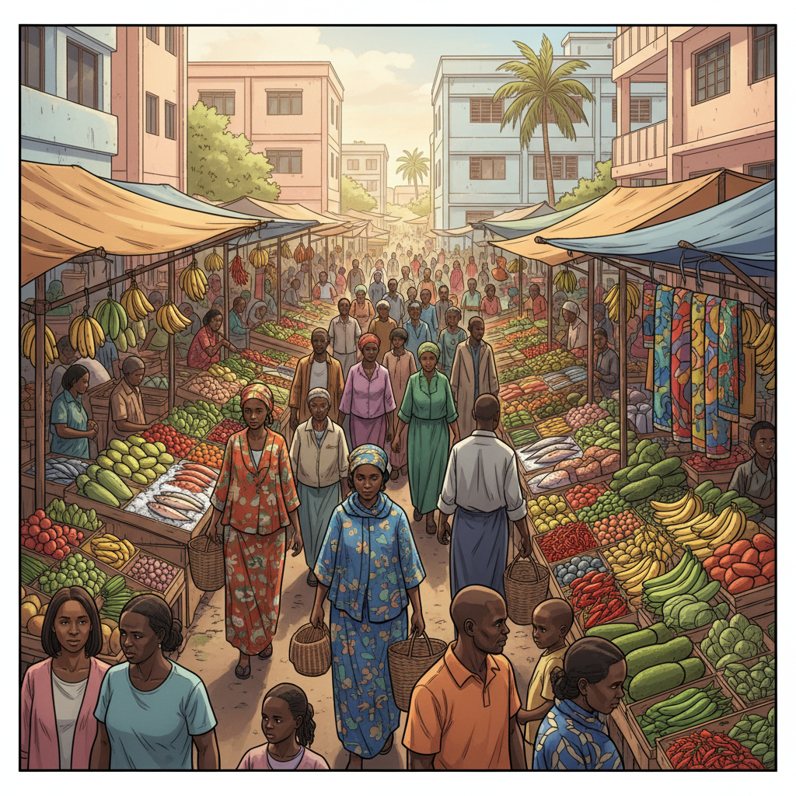
"Le marché de Mamoudzou. Trois semaines après. Pour moi, le temps n'existait plus vraiment. On m'emmenait. On me ramenait. Je flottais."
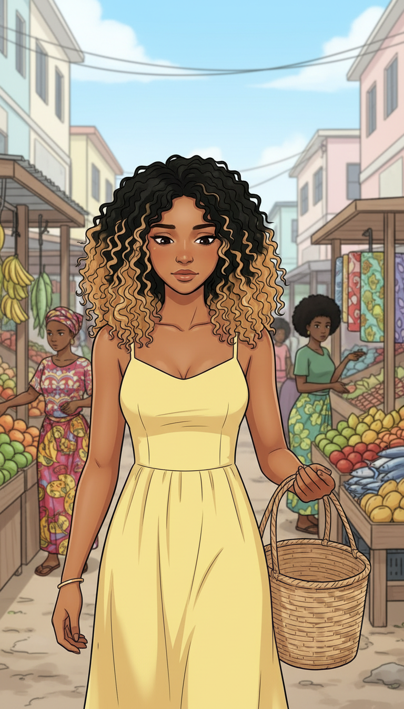
"J'avais appris à faire semblant d'exister. Yeux baissés. Pas automatiques. Ne rien ressentir."
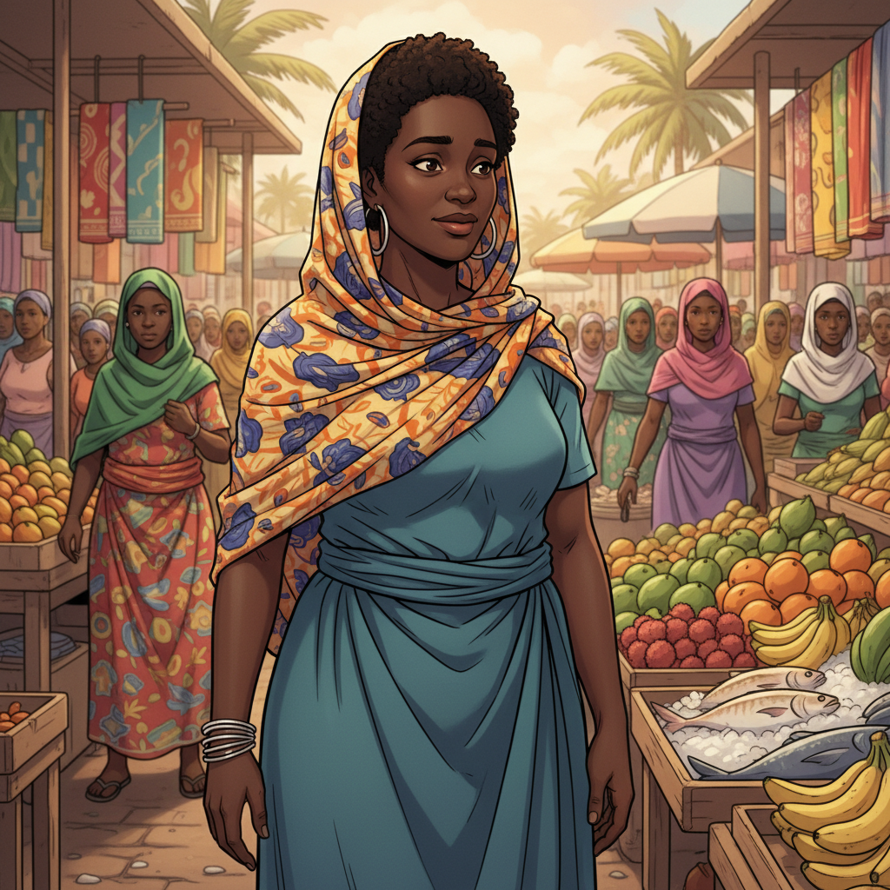
"Je ne savais pas qu'elle m'avait remarquée aussi. Une femme qui regardait sans détourner les yeux. Pas de pitié. Juste... de la présence."
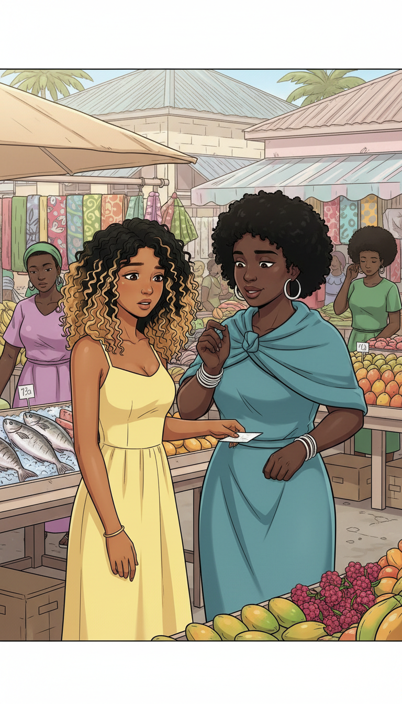
"Cinq secondes. Un geste invisible dans la foule. Un papier plié dans ma paume."
Appelle ce numéro. N'attends pas.
frtch
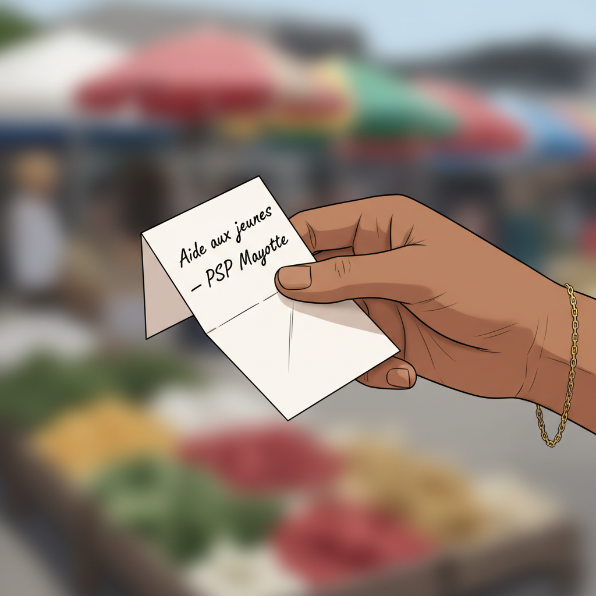
"'Aide aux jeunes — PSP Mayotte.' Je ne savais pas ce que c'était. Mais le mot 'aide'... je l'avais presque oublié."
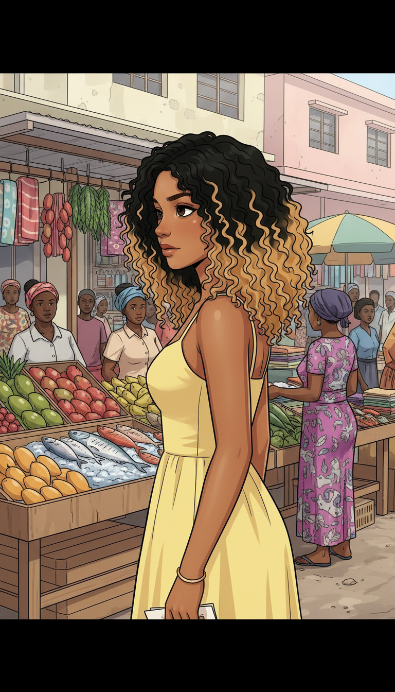
Elle sait quelque chose... Comment ? Est-ce que ça peut être vrai ?
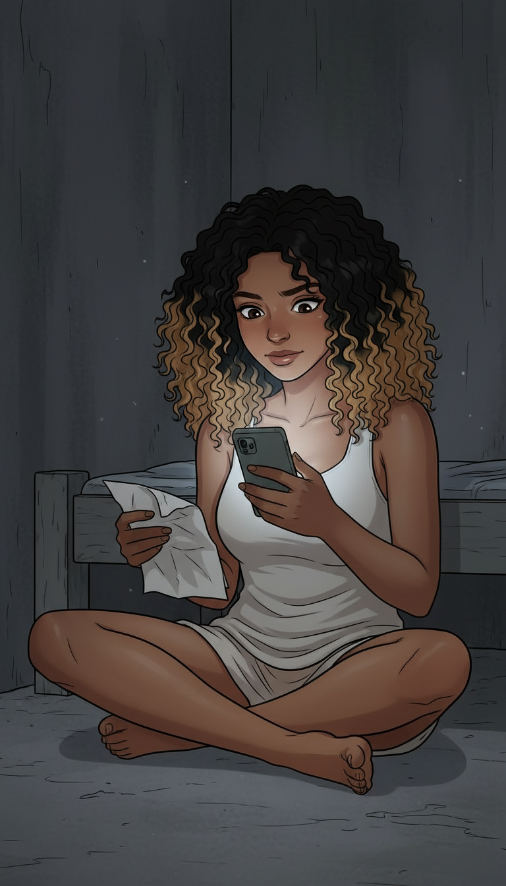
"Minuit. J'ai composé le numéro trois fois. Raccroché deux fois. À la troisième, j'ai laissé sonner."
Si quelqu'un m'entend... si les filles se réveillent...
BZZZ BZZZ
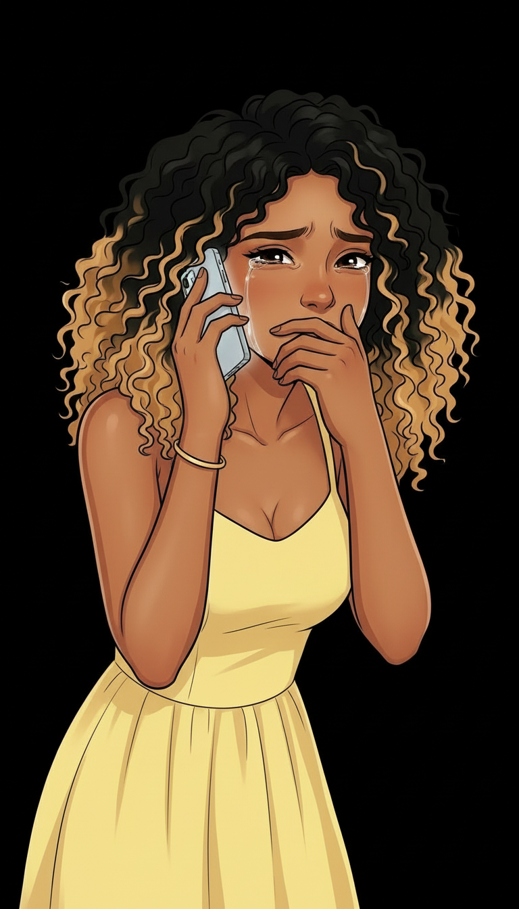
"Et puis j'ai parlé. La vérité entière. Pour la première fois depuis des semaines, j'ai dit la vérité."
Je ne sais pas par où commencer...
Je... je ne sais pas comment expliquer... on me force à...
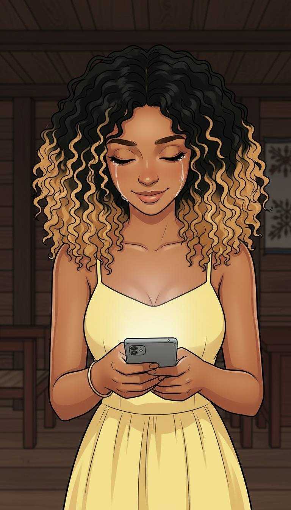
"La voix à l'autre bout était calme. Elle n'a pas crié. Elle n'a pas jugé. Elle a dit : 'Je t'entends.'"
Demain matin ? Oui... oui, je serai là.
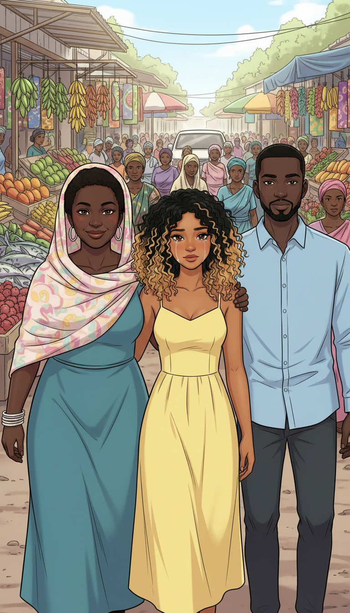
"Le lendemain matin, ils étaient là. Aïcha et un collègue. Pour la première fois depuis longtemps, je marchais sans regarder derrière moi."
TAP TAP TAP
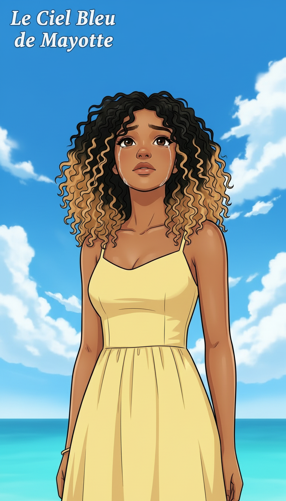
"Le ciel bleu de Mayotte. J'avais presque oublié qu'il existait. J'avais presque oublié que j'existais."